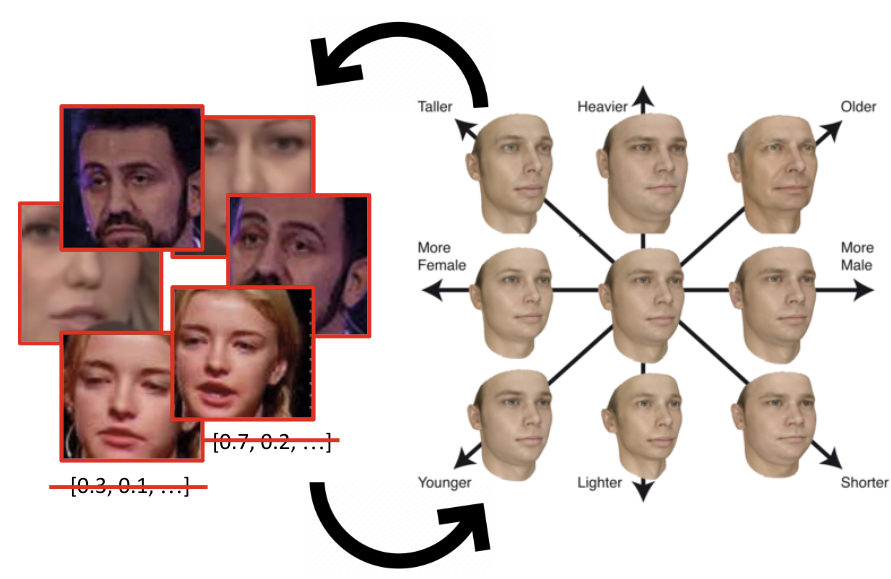

|
Research
During my PhD, I worked on generative image modeling for unsupervised cross-domain image alignment and manipulation. I am also interested in ML for graphics, generalization and statistical learning theory, neural tangent kernels and overparameterization, and other adjacent topics. See the resources section below.
|
|

|
Manipulating Natural Images by Learning Relationships between Visual Domains
Ben Usman
PhD Thesis 2022
youtube [1h] / slides / bib
We show how flexible attribute manipulation models can be trained without massive labeled datasets of real images by transferring knowledge about the desired manipulation across different image domains that share the underlying structure.
|
|
|
RIFT: Disentangled Unsupervised Image Translation via Restricted Information Flow
Ben Usman*, Dina Bashkirova*, Kate Saenko
WACV 2023
proceedings / suppl / github / project page / video / poster / bib
We propose a new many-to-many image translation method that infers which attributes are
domain-specific from data by constraining information flow through the network using translation honesty losses and a penalty on the capacity of the domain-specific embedding, and does not rely on hard-coded inductive architectural biases.
|
|
|
Analysing Failure Modes in Unsupervised Image-to-Image Translation
Literature Review 2021
youtube [1h] / slides / refs / bib
I present prior work that introduces tools helpful in reasoning about UI2I methods: ε-cover method with Chernoff bound (to estimate sample complexity), approximate Nash equilibrium (to analyse the existence of the solution), invertibility of Markov operators (to estimate statistical distances under data augmentations), and complexity tradeoffs in unsupervised alignment.
|
|
|
MetaPose: Fast 3D pose from multiple views without 3D supervision
Ben Usman, Andrea Tagliasacchi, Kate Saenko, Avneesh Sud
CVPR 2022
arxiv / github / project page / demo / poster / bib
We showed that a small feed-forward network can quickly and accurately estimate 3D poses and camera parameters from multi-view imagery successfully resolving uncertainty of single-view pose predictions and providing additional regularization in poorly conditioned few-camera setup.
|
|
|
Evaluation of Correctness in Unsupervised Many-to-Many Image Translation
Dina Bashkirova, Ben Usman, Kate Saenko
WACV 2022
arxiv / github / project page / poster / proceedings / bib
Our evaluation protocol reveals that all existing unsupervised many-to-many translation models fail to infer which attributes are domain-specific and which are domain-invariant from data, and mostly rely on biases hard-coded into their architectures.
|
|
|
Log-Likelihood Ratio Minimizing Flows: Towards Robust and Quantifiable Neural Distribution Alignment
Ben Usman, Nick Dufour, Avneesh Sud, Kate Saenko
NeurIPS 2020
arxiv / github / video [3min] / slides / poster / proceedings / bib
We show how to upper-bound an adversarial log-likelihood ratio domain alignment objective with a simple stable minimization objective, if the domain transformation is a normalizing flow, and show its relation to Jensen–Shannon divergence and GANs.
|
|
|
Adversarial Self-Defense for Cycle-Consistent GANs
Dina Bashkirova, Ben Usman, Kate Saenko
NeurIPS 2019
arxiv
/ github
/ project page
/ poster
/ proceedings
/ bib
We show that cycle-consistent models reconstruct input images by embedding low-amplitude structured noise into intermediate generated images. We propose an adversarial loss that prevents this kind of "cheating" and, as a result, improves translation accuracy.
|
|
|
PuppetGAN: Cross-domain image manipulation by demonstration
Ben Usman, Nick Dufour, Kate Saenko, Christoph Bregler
ICCV 2019 (Oral Presentation)
arxiv / project page / demo [1min] / iccv oral [4min] / poster / slides / bib
We train a model to precisely manipulate individual attributes of real images using only synthetic supervision for training, e.g. learning to realistically manipulate mouth expression or lighting on real human images from demonstrations of how these manipulations look on 3D renders.
|
|
|
Unsupervised video-to-video translation
Dina Bashkirova, Ben Usman, Kate Saenko
arXiv 2018
arxiv
/ github
/ volumetric data
/ bib
We propose a spatiotemporal extention of CycleGAN and show when it performs better then per-frame translation on two novel unsupervised video-to-video translation benchmarks including a novel CT-to-MRI volumetric medical domain.
|
|
|
Stable distribution alignment using the dual of the adversarial distance
Ben Usman, Kate Saenko, Brian Kulis
ICLR Workshop 2018
arxiv / poster / slides / bib
We showed how to stabilize gradient descent iterations for the adversarial alignment with a kernelized logistic discriminator by dualizing the inner maximization problem, and point to its relation to MMD with iteratively-reweighted least squares.
|
|
|
Syn2Real: A new benchmark for synthetic-to-real visual domain adaptation
Xingchao Peng, Ben Usman, Kuniaki Saito, Neela Kaushik, Judy Hoffman, Kate Saenko
arXiv 2018
arxiv
/ project page
/ challenge website
/ bib
We developed a large-scale synthetic datasets with occlusions for cross-domain detection and open-set classification.
|
|
|
VisDA: The visual domain adaptation challenge
Xingchao Peng, Ben Usman, Neela Kaushik, Judy Hoffman, Dequan Wang, Kate Saenko
CVPR Workshop 2018
arxiv
/ challenge website / bib
We developed a large-scale synthetic datasets for cross-domain closed-set classification.
|
|
Service
Teaching Fellow (TF) for CS542 Machine Learning [2019], Teaching Assistant (TA) for CS591: Deep Learning [2017], Grader for CS542 Machine Learning [2017] [2018], Final Project Supervisor and Guest Lecturer [pdf] for CS591 Machine Learning [2020] and CS585 Image and Video Computing [2021].
Reviewer for NeurIPS17, CVPR17, ICRA17, CVPR19, NeurIPS20, NeurIPS21, emergency reviewer for CVPR18,
outstanding reviewer for CVPR20 and NeurIPS22.
Helped running VisDA challenges at ICCV17, ECCV18, ICCV19 workshops, and NeurIPS21.
Supervised a high-school student for the AI4ALL outreach research program during the summer of 2021, and a master student for their directed study during the summer of 2020.
|
|
Resources
Outside machine learning, I like learning about new ways of looking at math problems (mostly in statistics, linear algebra, geometry, optimization), paradigm-shifting features in programming languages (like Rust's ownership), creative meta-programming (like narrowing type annotations in python with z3), probabilistic programming languages, shaders, better mental and programming models for hard problem domains like parallel computing or async user interaction (e.g. under what restrictions it is possible to declaratively describe a distributed computation and a consistency model - such as a kv-store, or a distributed consensus, or an async ui with client-side prediction - and have a compiler that infers the commutination protocol?), rules and patterns in art (cinema and writing tropes, game design). Below is a list of lesser known sources for inspiration.
Blogs: inFERENCe, Off the convex path, Eli Bendersky's website, Math ∩ Programming, I’m a bandit, Agustinus Kristiadi's Blog. Youtube: 3Blue1Brown, Sebastian Lague, LiveOverflow, minutephysics, Steve Mould, CodeParade, Design Doc.
|
|